화공기사(구) (2017-09-23 기출문제)
1과목: 화공열역학
1. 어떤 연료의 발열량이 10000kcal/kg일 때 이연료 1kg이 연소해서 30%가 유용한 일로 바뀔 수 있다면 500kg의 무게를 들어 올릴 수 있는 높이는 약 얼마인가?
- 26m
- 260m
- 2.6km
- 26km
(정답률: 62%)
2. 플래쉬(Flash) 계산에 대한 다음의 설명 중 틀린 것은?
- 알려진 T, P및 전체조성에서 평형상태에 있는 2상계의 기상과 액상 조성을 계산한다.
- K인자는 가벼움의 척도이다.
- 라울의 법칙을 따르는 경우 K인자는 액상과 기상 조성만의 함수이다.
- 기포점 압력계산과 이슬점 압력계산으로 초기조건을 얻을 수 있다.
(정답률: 50%)

3. 질량 40kg, 온도 427℃의 강철주물(Cp=500J/kgㆍ℃)을 온도 27℃, 200kg의 기름(Cp=2500J/kgㆍ℃)속에서 급냉시킨다. 열손실이 없다면 전체 엔트로피(Entropy) 변화는 얼마인가?
- 6060J/K
- 7061J/K
- 8060J/K
- 9⑤2J/K
(정답률: 30%)
4. 150kPa, 300K에서 2몰의 이상기체 부피는 얼마인가?
- 0.03326m3
- 0.3326m3
- 3.326m3
- 33.26m3
(정답률: 53%)
5. 기체-액체 평형을 이루는 순수한 물에 대한 다음 설명 중 옳지 않은 것은?
- 자유도는 1 이다.
- 같은 조건에서 기체의 내부에너지는 액체의 내부에너지보다 크다.
- 같은 조건에서 기체의 엔트로피가 액체의 엔트로피보다 크다.
- 같은 조건에서 기체의 깁스에너지가 액체의 깁스에너지보다 크다.
(정답률: 63%)
6. 압력이 일정한 정지상태의 닫힌 계(Closed system)가 흡수한 열은 다음 중 어느 것의 변화량과 같은가?
- 온도
- 운동에너지
- 내부에너지
- 엔탈피
(정답률: 58%)
7. 다음의 반응식과 같이 NH4CI이 진공에서 부분적으로 분해할 때 자유도수는?
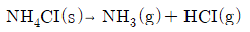
- 0
- 1
- 2
- 3
(정답률: 39%)
8. 유체의 등온압축률(isothermal compressibility, k)은 다음과 같이 정의된다.
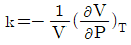
다음 중 이상기체의 등온압축률을 옳게 나타낸 것은?- k=1/T
- k=1/P
- k=R/T
- k=R/P
(정답률: 50%)
9. 기체의 퓨개시티 계수 계산을 위한 방법으로 가장 거리가 먼 것은?
- 포인팅(Poynting)방법
- 펭-로빈슨(Peng-Robinson)방법
- 비리얼(Virial)방정식
- 일반화된 압축인자의 상관관계 도포
(정답률: 47%)
10. 압력 240kPa에서 어떤 액체의 상태량이 Vf는 0.00177m3/kg, Vg는 0.1⑤m3/kg, Hf는 181kJ/KG, Hg 는 496kJ/kg 일 떄 이 압력에서의 Ufg는 약 몇 kJ/kg 인가? (단, V는 비체적, U는 내부에너지, H는 엔탈피, 하첨자 f는 포화액, g는 건포화증기를 나타내고 Ufg는 Ug-Uf이다.)
- 24.8
- 290.2
- 315.0
- 339.8
(정답률: 41%)
11. 가역단열공정이 진행될 때 올바른 표현식은?
- △H=0
- △U=0
- △A=0
- △S=0
(정답률: 64%)
12. 이상기체의 내부에너지에 대한 설명으로 옳은 것은?
- 온도만의 함수이다.
- 압력만의 함수이다.
- 압력과 온도의 함수이다.
- 압력이나 온도의 함수가 아니다.
(정답률: 72%)
13. 물이 증발할 때 엔트로피 변화는?
- △s=0
- △s＜0
- △s＞0
- △s≥0
(정답률: 67%)
14. 어떤 화학반응의 평형상수의 온도에 대한 미분계수가 0 보다 작다고 한다. 즉
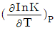
＜0이다. 이 때에 대한 설명으로 옳은 것은?- 이 반응은 흡열반응이며, 온도가 증가하면 K값은 커진다.
- 이 반응은 흡열반응이며, 온도가 증가하면 K값은 작아진다.
- 이 반응은 발열반응이며, 온도가 증가하면 K값은 작아진다.
- 이 반응은 발열반응이며, 온도가 증가하면 K값은 커진다.
(정답률: 67%)
15. 랭킨사이클로 작용하는 증기 원동기에서 25kgf/cm2, 400℃의 증기가 증기 원동기소에 들어가고 배기압 0.04kgf/cm2로 배출될 때 펌프일을 구하면 약 몇 kgfㆍm/kg 인가? (단, 0.04kgf/cm2에서 액체물의 비체적은 0.001m3/kg 이다.)
- 24.96
- 249.6
- 49.96
- 499.6
(정답률: 47%)
16. 오토기관(Otto cycle)의 열효율을 옳게 나타낸 식은? (단, r는 압축비, K는 비열비이다.)
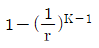
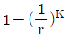
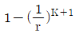
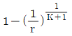
(정답률: 74%)
17. P-H 선도에서 등엔트로피 선 기울기
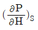
의 값은?- V
- T
- 1/V
- 1/T
(정답률: 56%)
18. 카르노(Carnot) 사이클의 열효율을 높이는데 다음 중 가장 유효한 방법은?
- 방열온도를 낮게 한다.
- 급열온도를 낮게 한다.
- 동작물질의 양을 증가시킨다.
- 밀도가 큰 동작 물질을 사용한다.
(정답률: 71%)
19. 디젤(Diesel)기관에 관한 설명 중 틀린 것은?
- 디젤(Diesel)기관은 압축과정에서의 온도가 충분히 높아서 연소가 순간적으로 시작한다.
- 같은 압축비를 사용하면 오토(Otto)기관이 디젤(Diesel)기관보다 효율이 높다.
- 디젤(Diesel)기관은 오토(Otto)기관보다 미리 점화하게 되므로 얻을 수 있는 압축비에 한계가 있다.
- 디젤(Diesel)기관은 연소공정이 거의 일정한 압력에서 일어날 수 있도록 서서히 연료를 주입한다.
(정답률: 54%)
20. 물의 증발잠열
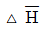
는 1기압, 100℃에서 539cal/g 이다. 만일 이 값이 온도와 기압에 따라 큰 변화가 없다면 압력이 635mmHg 인 고산지대에서 물의 끓는 온도는 약 몇 ℃ 인가? (단, 기체상수 R=1.987cal/molㆍK이다.)- 26.2
- 30
- 95
- 98
(정답률: 37%)
2과목: 단위조작 및 화학공업양론
21. 농도가 5%인 소금수용액 1kg을 1%인 소금수용액으로 희석하여 3%인 소금수용액을 만들고자 할 때 필요한 1% 소금수용액의 질량은 몇 kg 인가?
- 1.0
- 1.2
- 1.4
- 1.6
(정답률: 59%)
22. 82℃에서 벤젠의 증기압은 811mmHg, 톨루엔의 증기압은 314mmHg이다. 같은 온도에서 벤젠과 톨루엔의 혼합용액을 증발시켰더니 증기 중 벤젠의 몰분율은 0.5이었다. 용액 중의 톨루엔의 몰분율은 약 얼마인가? (단, 이상기체이며 라울의 법칙이 성립한다고 본다.)
- 0.72
- 0.54
- 0.46
- 0.28
(정답률: 36%)
23. 40℃에서 벤젠과 톨루엔의 혼합물이 기액평형에 있다. Raoult의 법칙이 적용된다고 볼 때 다음 설명 중 옳지 않은 것은? (단, 40℃에서의 증기압은 벤젠 180mmHg, 톨루엔 60mmHg이고, 액상의 조성은 벤젠 30mol%, 톨루엔 70mol%이다.)
- 기상의 평형분압은 토루엔 42mmHg이다.
- 기상의 평형분압은 벤젠 54mmHg이다.
- 이 계의 평형 전압은 240mmHg이다.
- 기상의 평형조성은 벤젠 56.25mol%, 톨루엔 43.75mol%이다.
(정답률: 60%)
24. 염화칼슘의 용해도는 20℃에서 140.0g/100gH2O, 80℃에서 160.0g/100gH2O이다. 80℃에서의 염화칼슘 포화용액 70g을 20℃로 냉각시키면 약 몇 g의 결정이 석출되는가?
- 4.61
- 5.39
- 6.61
- 7.39
(정답률: 54%)
25. 순수한 CaC2 1kg을 25℃, 1기압하에서 물 1L중에 투입하여 아세틸렌 가스를 발생시켯다. 이 때 얻어지는 아세틸렌은 몇 L인가? (단, Ca의 원자량은 40 이다.)
- 350
- 368
- 382
- 393
(정답률: 33%)
26. 끝이 열린 수은 마노미터가 물탱크내의 액체표면 아래 10m 지점에 부착되어 있을 때 마노미터의 눈금은? (단, 대기압은 1atm이다.)
- 29.5cmHg
- 61.5cmHg
- 73.5cmHg
- 1⑤.5cmHg
(정답률: 44%)
27. 노점 12℃, 온도 22℃, 전압 760mmHg의 공기가 어떤 계에 들어가서 나올 때 노점 58℃, 전압이 740mmHg로 되었다. 계에 들어가는 건조공기 mole당 증가된 수분의 mole 수는 얼마인가? (단, 12℃와 58℃에서 포화 수증기압은 각각 10mmHg, 140mmHg이다.)
- 0.02
- 0.12
- 0.18
- 0.22
(정답률: 19%)
28. 세기 성질(internsive property)이 아닌 것은?
- 온도
- 압력
- 엔탈피
- 화학포텐셜
(정답률: 52%)
29. 다음 그림과 같은 습윤공기의 흐림이 있다. A공기 100kg당 B공기 몇 kg을 섞어야겠는가?
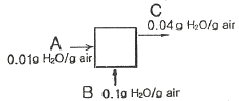
- 200kg
- 100kg
- 60kg
- 50kg
(정답률: 55%)
30. 같은 온도에서 같은 부피를 가진 수소와 산소의 무게의 측정값이 같았다. 수소의 압력이 4atm이라면 산소의 압력은 몇 atm 인가?
- 4
- 1
- 1/4
- 1/8
(정답률: 63%)
31. 다음 중 나머지 셋과 서로 다른 단위를 갖는 것은?
- 열전도도÷길이
- 총괄열전달계수
- 열전달속도÷면적
- 열유속(heat flux)÷온도
(정답률: 38%)
32. Fourier의 법칙에 대한 설명으로 옳은 것은?
- 전열속도는 온도차의 크기에 비례한다.
- 전열속도는 열전도도의 크기에 반비례한다.
- 열플럭스는 전열면적의 크기에 반비례한다.
- 열플럭스는 표면계수의 크기에 비례한다.
(정답률: 42%)
33. 정압비열이 1cal/gㆍ℃인 물 100g/s을 20℃에서 40℃로 이중 열교환기를 통하여 가열하고자 한다. 사용되는 유체는 비열이 10cal/gㆍ℃이며 속도는 10g/s, 들어갈 떄의 온도는 80℃이고, 나올 때의 온도는 60℃이다. 유체의 흐름이 병류라고 할 때 열교환기의 총괄열전달 계수는 약 몇 cal/m2ㆍsㆍ℃인가? (단, 이 열교환기의 전열 면적은 10m2이다.)
- 5.5
- 10.1
- 50.0
- 100.5
(정답률: 33%)
34. 수분을 함유하고 있는 비누와 같이 치밀한 고체를 건조시킬 때 감률건조기간에서의 건조속도와 고체의 함수율과의 관계를 옳게 나타낸 것은?
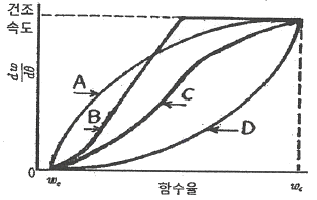
- A
- B
- C
- D
(정답률: 44%)
35. 농축조작선 방정식에서 환류비가 R 일 때 조작선의 기울기를 옳게 나타낸 것은? (단, XW는 탑저 제품 몰분율이고, XD는 탑상 제품 몰분율이다.)
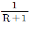
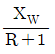
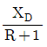
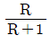
(정답률: 52%)
36. 분쇄에 대한 일반적인 설명으로 틀린 것은?
- 볼밀(ball mill)은 마찰분쇄 방식이다.
- 볼밀(ball mill)의 회전수는 지름이 클수록 커진다.
- 롤분쇄기의 분쇄량은 분쇄기의 폭에 비례한다.
- 일반 볼밀(ball mill)에 비해 쇠막대를 넣은 로드밀(rod mill)의 회전수는 대개 더 느리다.
(정답률: 58%)
37. 안지름 10cm의 수평관을 통하여 상온의 물을 수송한다. 관의 길이 100m, 유속 7m/s, 패닝마찰계수(Fanning friction factor)가 0.0⑤일 때 생가는 마찰손실 kgfㆍm/kg은?
- 5
- 25
- 50
- 250
(정답률: 29%)
38. 동점도(kinematic viscosity)의 설명으로 틀린 것은?
- 점도를 밀도로 나눈 것이다.
- 기체의 동점도는 압력의 변화나 밀도의 변화에 무관하다.
- 차원은 [L2t-I]이다.
- 스토크(stoke)또는 센티스토크(centistoke)의 단위를 쓰기도 한다.
(정답률: 61%)
39. 그림과 같이 50wt%의 추질을 함유한 추료(F)에 추제(S)를 가하여 교반 후 정치하였더니 추출상(E)과 주진상(R)으로 나뉘어졌다. 다음 중 틀린 것은?
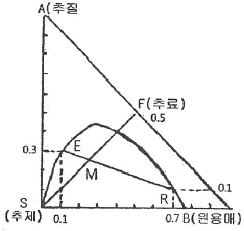
- E의 질량은
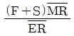
- 추출은
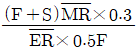
- 분배 계수는 3이다.
- 선택도는 2.1이다.
(정답률: 34%)
40. 어떤 촉매반응기의 공극율, ε가 0.4 이다. 이 반응기 입구의 공탑유속이 0.2m/s 라면 촉매층세공엣의 유속은 몇 m/s가 되겠는가?
- 2.0
- 1.0
- 0.8
- 0.5
(정답률: 49%)
3과목: 공정제어
41. 다단제어에 대한 설명으로 옳은 것은?
- 종속제어기 출력이 주에어기의 설정점으로 작용하게 된다.
- 종속제어루프 공정의 동특성이 주제어루프 공정의 동특성보다 충분히 빠를수록 바람직하다.
- 주제어루프를 통하여 들어오는 외란을 조기에 보상하는 것이 주 목적이다.
- 종속제어기는 빠른 보상을 위하여 피드포워드 제어알고리즘을 사용한다.
(정답률: 52%)
42. 피드포워드(feedforward) 제어에 대한 설명 중 옳지 않은 것은?
- 화학공정제어에서는 lead-lag 보상기로 피드포워드 제어기를 설계하는 일이 많다.
- 피드포워드 제어기는 페루프 제어시스템의 안정도(stavility)에 주된 영향을 준다.
- 일반적으로 제어계 설계시 피드포워드 제어는 피드백 제어기와 함께 구성된다.
- 피드포워드 제어기의 설계는 공정의 정적 모델, 혹은 동적 모델에 근거하여 설계될 수 있다.
(정답률: 44%)
43. 어떤 압력측정장치의 측정범위는 0~400psig, 출력 범위는 4~20mA로 조성되어 있다. 이 장치의 이득을 구하면 얼마인가?
- 25mA/psig
- 0.01mA/psig
- 0.08mA/psig
- 0.04mA/psig
(정답률: 61%)
44. 다음 그림의 펄스 Laplace 변환은?
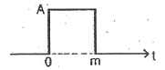
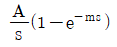
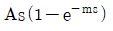
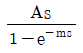
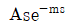
(정답률: 66%)
45. 비례-미분제어장치의 전달함수의 형태를 옳게 나타낸 것은? (단, K는 이득, r는 시간정수이다.)
- Krs
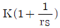
- K(1+rs)
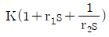
(정답률: 56%)
46. 전달함수 G(s)=1/(2s+1)인 1차계의 단위계단응답은?
- 1+e-0.5t
- 1-e-0.5t
- 1+e0.5t
- 1-e0.5t
(정답률: 54%)
47. 다음 블록선도에서 Q(t)의 변화만 있고, Ti(t)=0 일 때
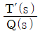
의 전달함수로 옳은 것은?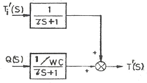
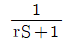
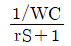
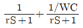
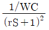
(정답률: 51%)
48. 다음 중 계단입력에 대한 공정출력이 가장 느리게 움직이는 것은?
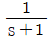
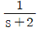
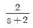
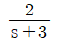
(정답률: 51%)
49. 함수 f(t)의 라플라스 변환은 다음과 같다.
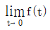
를 구하면?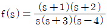
- 1
- 2
- 3
- 4
(정답률: 59%)
50. 페루프 특성방정식의 근에 대한 설명으로 옳은 것은?
- 음의 실수근은 진동 수렴 응답을 의미한다.
- 양의 실수근은 진동 발산 응답을 의미한다.
- 음의 실수부의 복소수근은 진동 발산 응답을 의미한다.
- 양의 실수부의 복소수근은 진동 발산 응답을 의미한다.
(정답률: 36%)
51. 다음 블록선도가 등가인 경우 A요소의 전달함수를 구하면?
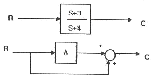
- -1/(S+4)
- -2/(S+4)
- -3/(S+4)
- -4/(S+4)
(정답률: 58%)
52. 전달함수가
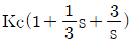
인 PID제어기에서 미분시간과 적분시간은 각각 얼마인가?- 미분시간 : 3, 적분시간 : 3
- 미분시간 : 1/3, 적분시간 : 3
- 미분시간 : 3, 적분시간 : 1/3
- 미분시간 : 1/3, 적분시간 : 1/3
(정답률: 54%)
53. 운전자의 눈을 가린 후 도로에 대한 자세한 정보를 주고 운전을 시킨다면 이는 어느 공정제어 기법이라고 볼 수 있는가?
- 되먹임제어
- 비례제어
- 앞먹임제어
- 분산제어
(정답률: 63%)
54. 그림과 같은 응답을 보이는 시간함수에 대한 라플라스 함수는?
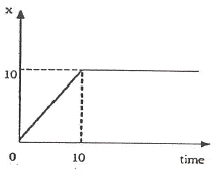
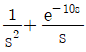
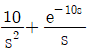
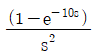
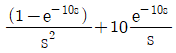
(정답률: 43%)
55. 다음 그림은 간단한 제어계 block선도이다. 전체 제어계의 총괄전달함수(overall transferfunction)에서 시상수(time constant)는 원래 process
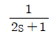
의 시상수에 비해서 어떠한가? (단, K ＞0 이다.)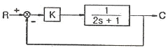
- 늘어난다.
- 줄어든다.
- 불변이다.
- 늘어날 수도 있고 줄어들 수도 있다.
(정답률: 47%)
56. 공정제어를 최적으로 하기 위한 조건 중 틀린 것은?
- 제어편차 e가 최대일 것
- 응답의 진동이 작을 것
- Overshoot 이 작을 것
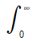
t|e|dt 가 최소일것
(정답률: 57%)
57. 제어계의 구성요소 중 제어오차(에러)를 계산하는 것은 어느 부분에 속하는가?
- 측정요소(센서)
- 공정
- 제어기
- 최종제어요소(엑츄에이트)
(정답률: 51%)
58. 다음의 적분공정에 비례제어기를 설치하였다. 계단형태의 외란 D1과 D2에 대하여 옳은 것은?
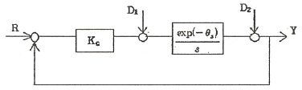
- 외란 D1에 대한 offset은 없으나, 외란 D2에 대한 offset은 있다.
- 외란 D1에 대한 offset은 있으나, 외란 D2에 대한 offset은 없다.
- 외란 D1 및 D2에 대하여 모두 offset이 있다.
- 외란 D1 및 D2에 대하여 모두 offset이 없다.
(정답률: 45%)
59. 다음 입력과 출력의 그림에서 나타내는 것은? (단, L은 이동거리[cm] 이고 V는 이동속도 [cm/s] 이다.)
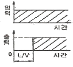
- CR회로의 동작응답
- 용수철계의 응답
- 데드타임의 공정응답
- 적분요소의 계단상 응답
(정답률: 52%)
60. 전달함수
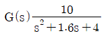
인 2차계의 시정수 r와 damping factor ζ의 값은?- r = 0.5, ζ = 0.8
- r = 0.8, ζ = 0.4
- r = 0.4, ζ = 0.5
- r = 0.5, ζ = 0.4
(정답률: 52%)
4과목: 공업화학
61. 아미노기는 물에서 이온화된다. 아미노기가 중성의 물에서 이온화되는 정도는? (단, 아미노기의 Kb 값은 10-5이다.)
- 90%
- 95%
- 99%
- 100%
(정답률: 45%)
62. 다음 중 칼륨질 비료의 원료와 가장 거리가 먼 것은?
- 간수
- 초목재
- 고로더스트
- 칠레초석
(정답률: 53%)
63. 다음화학반응 중 수소의 첨가 반응으로 이루어질 수 없는 반응은?
(정답률: 43%)
64. 옥탄가에 대한 설명으로 틀린 것은?
- n-헵탄의 옥탄가를 100으로 하여 기준치로 삼는다.
- 가솔린의 안티노크성(antiknock preperty)을 표시하는 척도이다.
- n-헵탄과 iso-옥탄의 비율에 따라 옥탄가를 구할 수 있다.
- 탄화수소의 분자구조와 관계가 있다.
(정답률: 59%)
65. 연실법 Glover 탑의 질산 환원공정에서 35wt% HNO3 25kg으로부터 NO를 약 몇 kg 얻을 수 있는가?
- 2.17kg
- 4.17kg
- 6.17kg
- 8.17kg
(정답률: 55%)
66. 나일론 66의 주된 원료가 되는 물질은?
- 헥사메틸렌테트라민
- 헥사메틸렌트리아민
- 헥사메틸렌디아민
- 카프로락탐
(정답률: 50%)
67. 다음의 구조를 갖는 물질의 명칭은?
- 석탄산
- 살리실산
- 톨루엔
- 피크르산
(정답률: 58%)
68. 고도표백분에서 이상적으로 차아염소산칼슘의 유효염소는 약 몇%인가? (단, CI의 원자량은 35.5이다.)
- 24.8
- 49.7
- 99.3
- 114.2
(정답률: 28%)
69. 질산을 공업적으로 제조하기 위하여 이용하는 다음 암모니아 산화 반응에 대한 설명으로 옳지 않은 것은?
- 바나듐(V2O5) 촉매가 가장 많이 이용된다.
- 암모니아와 산소의 혼합가스는 폭팔성이 있기 때문에 [O2]/[NH3]=2.2~2.3이 되도록 주의한다.
- 산화율에 영향을 주는 인자 중 온도와 압력의 영향이 크다.
- 반응온도가 지나치게 높아지면 산화율은 낮아진다.
(정답률: 45%)
70. Poly(vinyl alcohol)의 주원료 물질에 해당하는 것은?
- 비닐알콜
- 염화비닐
- 초산비닐
- 플루오르화비닐
(정답률: 46%)
71. 올레핀의 니트로화에 관한 설명 중 옿지 않은 것은?
- 저급 올레핀의 반응시간은 일반적으로 느리다.
- 고급 올레핀의 반응속도가 저급 오레핀보다 빠르다.
- 일반적으로 -10~25℃의 온도 범위에서 실시한다.
- 이산화질소의 부기에 의하여 용이하게 이루어진다.
(정답률: 36%)
72. 소금을 전기분해하여 수산화나트륨을 제조하는 방법에 대한 설명 중 옿지 않은 것은?
- 이론 분해 전압은 격막법이 수은법보다 높다.
- 전류밀도는 수은법이 격막법보다 크다.
- 격막법은 공정 중 염분이 남아있게 된다.
- 격막벅은 양극실과 음극식 액의 pH가 다르다.
(정답률: 57%)
73. 청바지 색을 내는 염료로 사용하는 청색 배트 염료에 해당하는 것은?
- 매염아조 염료
- 나프톨 염료
- 아세테이트용 아조염료
- 인디고 염료
(정답률: 63%)
74. 석유화학 공정에 대한 설명 중 틀린 것은?
- 비스브레이킹 공정은 열분해법의 일종이다.
- 열분해란 고온하에서 탄화수소 분자를 분해하는 방법이다.
- 접촉분해공정은 촉매를 이용하지 않고 탄화수소의 구조를 바꾸어 옥탄가를 높이는 공정이다.
- 크래킹은 비점이 높고 분자량이 큰 탄화수소를 분자량이 작은 저비점의 탄화수소로 전환 하는 것이다.
(정답률: 59%)
75. 일반적으로 윤활성능이 높은 탄화수소 순으로 옳게 나타낸 것은?
- 파라핀계＞나프텐계＞방향족계
- 파라핀계＞방향족계＞나프텐계
- 방향족계＞나프텐계＞파라핀계
- 나프텐계＞파라핀계＞방향족계
(정답률: 48%)
76. 격막식 수산화나트륨 전해조에서 CI2가 발생하는 쪽의 전극 재료로 사용하는 것은?
- 흑연
- 철망
- 니켈
- 다공성 구리
(정답률: 65%)
77. 다음 중 이론 질소량이 가장 높은 질소질 비료는?
- 요소
- 황산암모늄
- 석회질소
- 질산칼슘
(정답률: 59%)
78. 레페(Reppe) 합성반응을 크게 4가지로 분류할 때 해당하지 않는 것은?
- 알킬화 반응
- 비닐화 반응
- 고리화 반응
- 카르보닐화 반응
(정답률: 32%)
79. 인광석을 황산으로 분해하여 인산을 제조하는 습식법의 경우 생성되는 부산물은?
- 석고
- 탄산나트륨
- 탄산칼슘
- 중탄산칼슘
(정답률: 42%)
80. 소금의 전기분해에 의한 가성소다 제조공정 중 격막식 전해조의 전력원단위를 향상시키기 위한 조치로서 옳지 않은 것은?
- 공급하는 소금물을 양극액 온도와 같게 예열하여 공급한다.
- 동판 등 전해조 자체의 재료의 저항을 감소시킨다.
- 전해조를 보온한다.
- 공급하는 소금물의 망초(Na2SO4)의 함량을 2% 이상 유지한다.
(정답률: 53%)
5과목: 반응공학
81. 반응물 A의 농도를 cA, 시간을 t라고 할 때 0차 반응의 경우 직선으로 나타나는 관계는?
(정답률: 55%)
82. 반응물질 A의 농도가 [Ao]에서 시작하여 t시간 후 [A]로 감소하는 액상반응에 대하여 반응속도상수 로 표현된다. 이 때 k를 옳게 나타낸 것은?
- 0차 반응의 속도상수
- 1차 반응의 속도상수
- 2차 반응의 속도상수
- 3차 반응의 속도상수
(정답률: 58%)
83. 반응물 A가 다음과 같은 병렬반응을 일으킨다. 두 반응의 차수 n1 = n2이면 생성물 분포비율()은 어떻게 되는가?
- A의 농도에 비례해서 커진다.
- A의 농도에 관계없다.
- A의 농도에 비례해서 작아진다.
- 속도 상수에 관계없다.
(정답률: 56%)
84. 다음 반응에서 -ln(CA/CA0)를 t로 plot하여 직선을 얻었다. 이 직선의 기울기는? (단, 두 반응 모두 1차 비가역반응이다.)
- k1
- k2
- k1/k2
- k1+k2
(정답률: 55%)
85. 액상 가역 1차 반응 A⇄R을 등온하에서 반응시켜 평형전화율 XAe은 80%로 유지하고 싶다. 반응온도를 얼마로 해야 하는가? (단, 반응열은 온도에 관계없이 -10000cal/molㆍ25℃에서의 평형상수는 300, CRo=0이다.)
- 75℃
- 127℃
- 185℃
- 212℃
(정답률: 33%)
86. 다음 그림은 기초적 가역 반응에 대한 농도시간 그래프이다 그래프의 의미를 가장 잘 나타낸 것은?
(정답률: 50%)
87. 다음과 같은 반응메커니즘의 촉매 반응이 일어날 때 Langmuir 이론에 의한 A의 흡착반응 속도 rA를 옳게 나타낸 것은? (단, ka와 k_a는 각 경로에서 흡착 및 탈착 속도 상수, θ는 흡착분율, PA는 A성분의 분압이고, S는 활성점이다.)
- rA=kaPAθAθB-k_aθB
- rA=kaPAθAθB-k_aθA
- rA=kaPA(1-θAθB)-k_aθA
- rA=kaPA(θA)-k_aθB
(정답률: 35%)
88. 기상 촉매반응의 유효인자(effectivenessfactor)에 영향을 미치는 인자로 다음 중 가장 거리가 먼 것은?
- 촉매 입자의 크기
- 촉매 반응기의 크기
- 반응기 내의 전체 압력
- 반응기 내의 온도
(정답률: 45%)
89. 공간시간이 τ=1min인 똑같은 혼합반응기 4개가 직렬로 연결되어 있다. 반응속도상수가 k=0.5min-1인 1차 액상 반응이며 용적 변화율은 0 이다. 첫째 반응기의 입구 농도가 1mol/L 일 때 네 번째 반응기의 출구 농도(mol/L)는 얼마인가?
- 0.098
- 0.125
- 0.135
- 0.198
(정답률: 34%)
90. 어떤 반응을 “ 플러그흐름 반응기→혼합반응기→플러그흐름 반응기”의 순으로 직렬연시켜 반응하고자 할 때 반응기 성능을 나타낸 것은?
(정답률: 57%)
91. 홈합흐름반응기에서 연속반응(A→R→S, 각각의 속도상수는 k1, k2)이 일어날 때 중간생성물 R이 최대가 되는 시간은?
- k1, k2의 기하평균의 역수
- k1, k2의 산술평균의 역수
- k1, k2의 대수평균의 역수
- k1, k2에 관계없다.
(정답률: 37%)
92. 다음의 액상 균일 반응을 순환비가 1인 순환식 반응기에서 반응시킨 결과 반응물 A의 전화율이 50%이었다. 이 경우 순환 pump를 중지시키면 이 반응기에서 A의 전화율은 얼마인가?
- 45.6%
- 55.6%
- 60.6%
- 66.6%
(정답률: 25%)
93. 비가역 1차 반응에서 속도정수가 2.5×10-3s-1이었다. 반응물의 농도가 2.0×10-2mol/cm3일 때의 반응속도는 몇 mol/cm3ㆍs 인가?
- 0.4×10-1
- 1.25×10-1
- 2.5×10-5
- 5.0×10-5
(정답률: 60%)
94. 균일 반응 에서 반응속도가 옳게 표현된 것은?
(정답률: 54%)
95. 목적물이 R인 연속반응 A→R→S에서 A→R의 반응속도상수를 k1이라 하고, R→S의 반응속도상수를 k2라 할 때 연속반응의 설계에 대한 다음 설명 중틀린 것은?
- 목적하는 생성물 R의 최대 농도를 얻는데는 k1=k2인 경우를 제외하면 혼합흐름 반응기보다 플러그흐름 반응기가 더짧은 시간이 걸린다.
- 목적하는 생성물 R의 최대 농도는 플러그흐름 반응기에서 혼합흐름 반응기보다 더 큰 값을 얻을 수 있다.
- 이면 반응물의 전환율을 높게 설계하는 것이 좋다.
- 이면 미반응물을 회수할 필요는 없다.
(정답률: 42%)
96. 그림과 같이 직렬로 연결된 혼합 흐름 반응기에서 액상 1차 반응이 진행될 때 입구의 농도가 C0이고 출구의 농도가 C2일 때 총 부피가 최소로 되기 위한 조건이 아닌 것은?
- r1=r2
- V1=V2
(정답률: 36%)
97. 촉매의 기능에 관한 설명으로 옳지 않은 것은?
- 촉매는 화학평형에 영향을 미치지 않는다.
- 촉매는 반응속도에 영향을 미친다.
- 촉매는 화학반응의 활성화에너지를 변화시킨다.
- 촉매는 화학반응의 양론식을 변화시킨다.
(정답률: 59%)
98. 회분식반응기에서 A→R, -rA=3CA0.5mol/Lㆍh, CAO=1mol/L의 반응이 일어날 때 1시간 후의 전화율은?
- 0
- 1/2
- 2/3
- 1
(정답률: 31%)
99. 다음의 반응에서 R 이 목적생성물일 때 활성화 에너지 E가 E1＜E2,E1＜E3이면 온도를 유지하는 가장 적절한 방법은?
- 저온에서 점차적으로 고온으로 전환한다.
- 온도를 높게 유지한다.
- 온도를 낮게 유지한다.
- 고온→저온→고온으로 전환을 반복한다.
(정답률: 58%)
100. 반응물질 A는 1L/min 속도로 부피가 2L인 혼합반응기로 공급된다. 이 때 A의 출구농도 CAf는 0.01mol/L이고 초기농도 CAO는 0.1mol/L 일 때 A의 반응속도는 몇 mol/Lㆍmin인가?
- 0.045
- 0.062
- 0.082
- 0.100
(정답률: 47%)